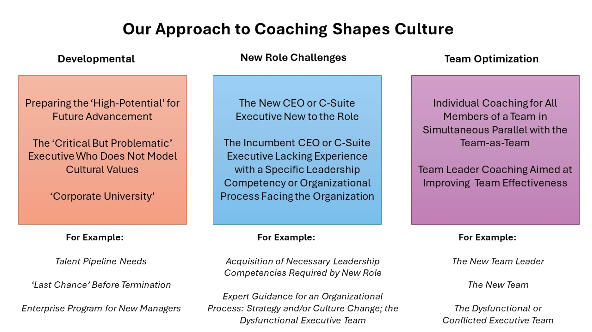

There are many reasons executives seek out coaching.
Leadership & Management Competencies.
Executives in leadership positions may need a subject matter expert to guide them through a process the first time in an unfamiliar area. Even experienced leaders might not have led a change in strategy or culture; a merger/acquisition; a dysfunctional or conflicted team; a critical Board; managing a difficult team member or disruptive conflict between executives. There is a first time for every leader in one area or another.
Newly promoted leaders may be well-qualified in their technical discipline but not have all of the managerial and leadership skills required in that new role. This is more likely with the new generation of managers who probably were not exposed to ‘Peter Drucker’ basics earlier in their career. Any leader moving into a new executive role will likely have at least one area which their prior experience did not provide experience. Advancement upward, by definition, includes an expanded portfolio which also requires monitoring and delegating at new levels of detail.
Chris has 35 years experience coaching top executives as a subject matter expert in these areas that every executive will face.
- Strategy Making and Execution
- Team and Individual Leadership
- Culture Change and Alignment with Business Strategy
- Delegation and Time Management
Personality and Style Coaching.
Top leaders – irrespective of the title CEO, President, C-Something– are, after all, still human and have areas of strength, less strength and weakness. Everyone has something to work on but all too often the need is buried in the high-competence technical culture where leadership effectiveness is measured with financial and operational metrics. It is our consistent experience that executives primary personal strengths are also liabilities, as a function of the setting and role.
How We Structure All Coaching:
- Focus. What is the focus of our work together? What is the coaching going to produce in terms of some improvement for the executive.
- How we will measure success?
- What the tempo of the coaching will be
- Typically a six-month timeframe, with option to end or re-contract
- Typically 1x/week meetings – though not always
- Usually an initial assessment and 360 in some form
- Confidentiality. Explicit and transparent agreements about confidentiality and what will be reported outside of the coaching relationship. Coaching is not therapy; there must be some report out of value for the organization.
- Usually a kick-off and closing 3-way meeting with executive and his or her manager
- Confidentiality re: any personal revelations. Issues that Chris believes should not remain unspoken, will typically be conveyed by the executive to whomever is appropriate – often the direct superior. Chris does not report outside of the coaching relationship other than what has been agreed to with the executive.